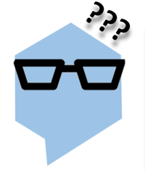

Abstract
We propose MM-REACT, a system paradigm that integrates ChatGPT with a pool of vision experts to achieve multimodal reasoning and action. In this paper, we define and explore a comprehensive list of advanced vision tasks that are intriguing to solve, but may exceed the capabilities of existing vision and vision-language models. To achieve such advanced visual intelligence, MM-REACT introduces a textual prompt design that can represent text descriptions, textualized spatial coordinates, and dense visual signals such as images and videos represented as aligned file names. MM-REACT’s prompt design allows language models to accept, associate, and process multimodal information, thereby facilitating the synergetic combination of ChatGPT and various vision experts. Zero-shot experiments demonstrate MM-REACT’s effectiveness in addressing the specified capabilities of interests and its wide application in different scenarios that require complicated visual understanding. Furthermore, we discuss and compare MM-REACT’s system paradigm with an alternative approach that extends language models for multimodal scenarios through joint finetuning.
MM-ReAct Design
MM-ReAct is a system paradigm that composes numerous vision experts with ChatGPT for multimodal reasoning and action.
- To enable the image as input, we simply use the file path as the input to ChatGPT. The file path functions as a placeholder, allowing ChatGPT to treat it as a black box.
- Whenever a specific property, such as celebrity names or box coordinates, is required, Chat- GPT is expected to seek help from a specific vision expert to identify the desired information.
- The expert output is serialized as text and combined with the input to further activate ChatGPT.
- If no external experts are needed, we directly return the response to the user.
Flowchart of MM-REACT to enable image understanding with ChatGPT.
MM-ReAct's Full Execution Flow
We provide an examples of MM-REACT’s full execution flow blow. More examples can be found in our paper.
- The executions, highlighted by bold text, can be either a ChatGPT call (e.g., “ChatGPT:”) or running a selected vision expert (e.g., “Image Captioning”).
- ChatGPT executions can be used to generate thought (reasoning) and action texts that allocate vision experts , or produce the final response to users .
- Each ChatGPT execution takes the preceding text as input and generates the text leading up to the next execution (e.g., “This is an image. Assistant, what objects . . . image? <ImagePath>” for the first execution).
- Texts in gray represent MM-REACT’s thoughts or vision experts’ actions and outputs (observations), which are invisible to users. This multimodal reasoning and action process occurs behind the scene to gather the necessary information for generating final responses to users, which are shown in black.
An example of MM-REACT’s full execution flow.
Video Demo
Click each panel below for the corresponding video demo.